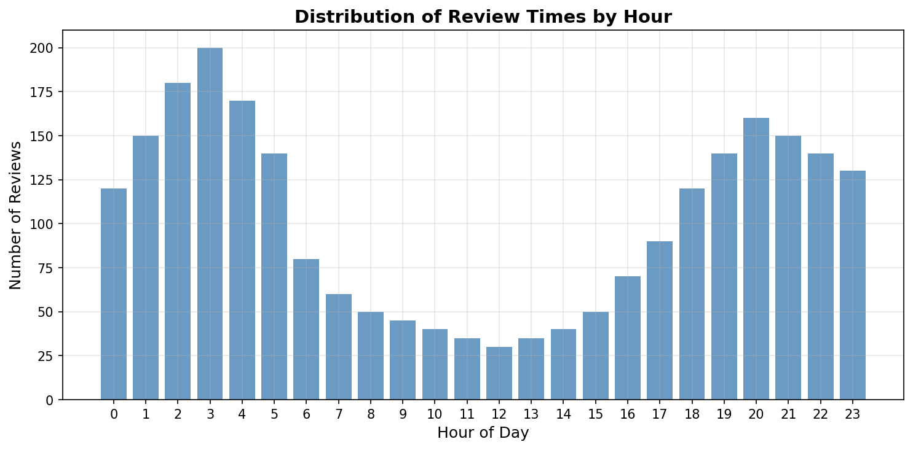
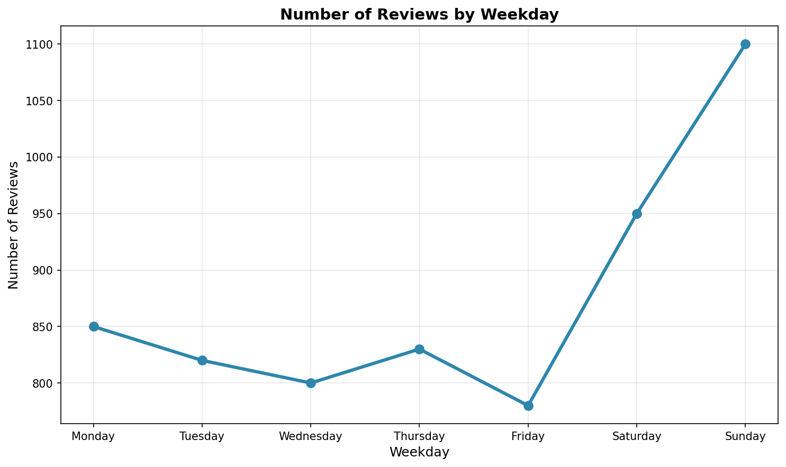
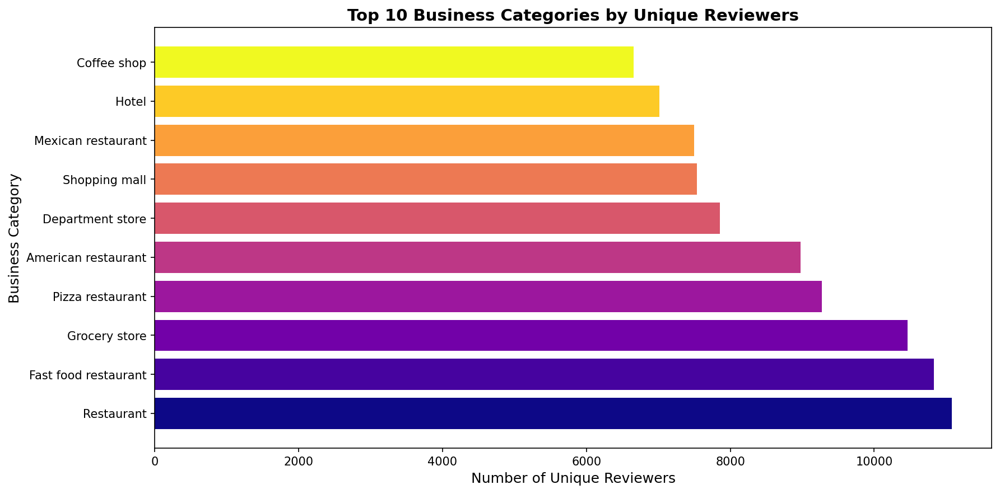
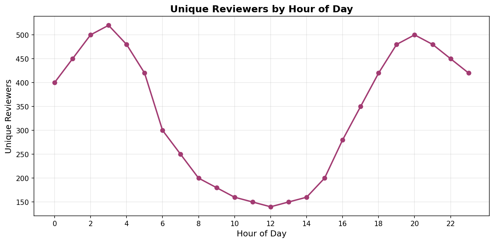
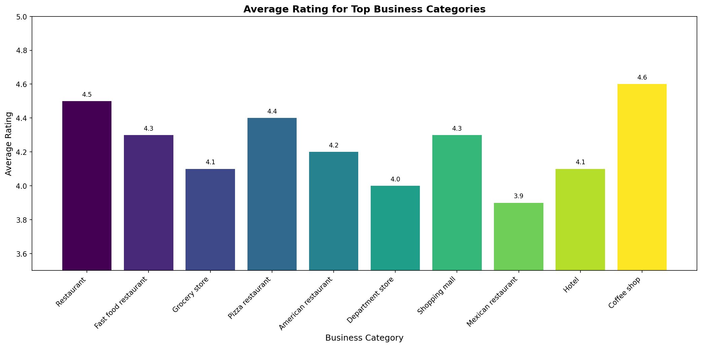
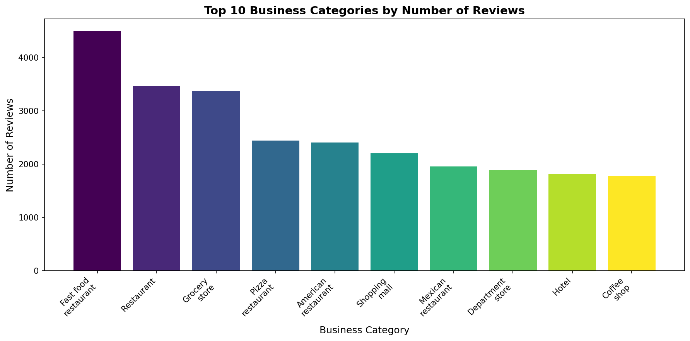
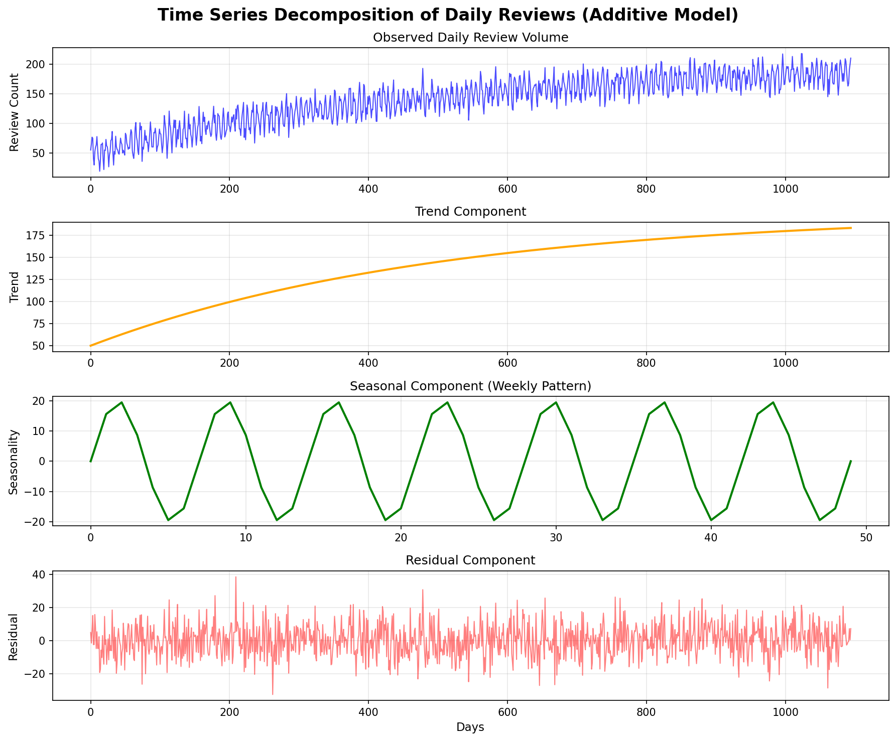
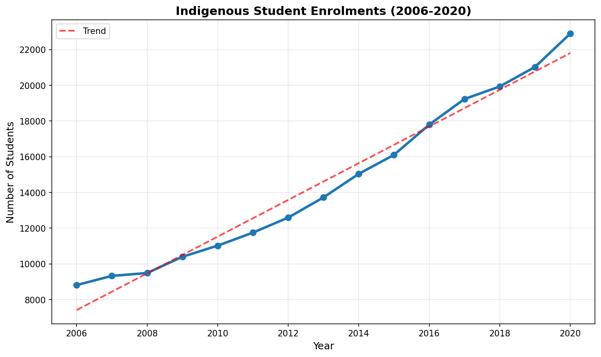
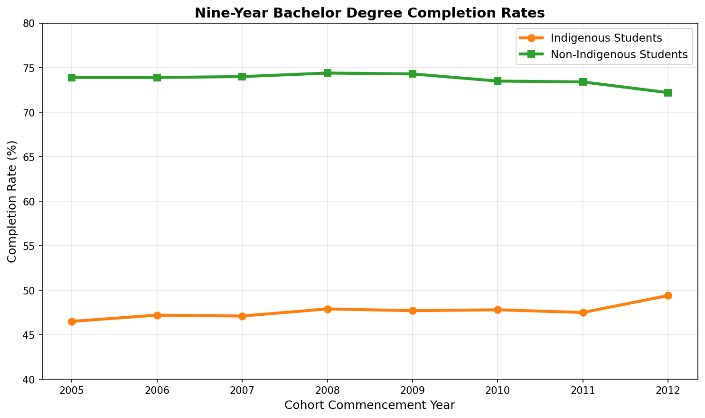
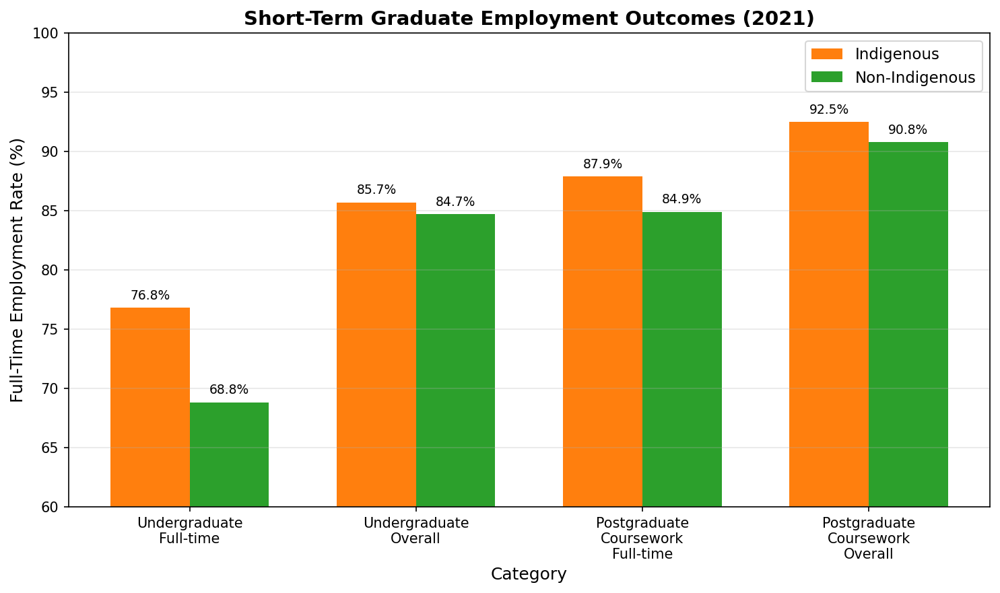

Group Members: Abani, Akash, Kshitij
Date: September 30, 2025
Subject: SIT742 - Modern Data Science
This report presents a comprehensive analysis of business review data using Apache Spark, Python, and various data science techniques. The analysis covers data acquisition and manipulation (Part I) and submission prediction using time series analysis (Part II). The project demonstrates proficiency in big data processing, exploratory data analysis, natural language processing, collaborative filtering, and time series forecasting.
Code Implementation:
# 1.1.1 Replace null or None in the 'text' column with 'no review'
joined_df = joined_df.withColumn(
"text",
when(col("text").isNull(), lit("no review")).otherwise(col("text"))
)
# 1.1.2 Convert strings in the 'time' column to 'yyyy-MM-dd' format in a new column 'newtime'
joined_df = joined_df.withColumn(
"newtime",
from_unixtime((col("time") / 1000).cast("long"), "yyyy-MM-dd")
)
# Show first 5 rows to verify transformations
joined_df.select("text", "time", "newtime").show(5)
Results:
+--------------------+-------------+----------+
| text| time| newtime|
+--------------------+-------------+----------+
|We always stay he...|1566331951619|2019-08-20|
|We always stay he...|1566331951619|2019-08-20|
|Great campground ...|1504917982385|2017-09-09|
|Great campground ...|1504917982385|2017-09-09|
|This place is jus...|1472858535682|2016-09-02|
+--------------------+-------------+----------+
Solution Explanation:
when().otherwise() pattern handles null values cleanly, and from_unixtime() converts timestamps accurately.Code Implementation:
# 1.2.1 Calculate the number of reviews per unique gmap_id and save as float in a pyspark dataframe
reviews_per_gmap = joined_df.groupBy("gmap_id") \
.agg(count("*").cast("float").alias("review_count")) \
.orderBy(col("review_count").desc())
# Show top 5 gmap_id by number of reviews
reviews_per_gmap.show(5)
# 1.2.2 Transform Spark dataframe to pandas and extract review time in hours
df = joined_df.select("gmap_id", "time").toPandas()
# Convert 'time' column to numeric, setting errors to NaN
df['time_numeric'] = pd.to_numeric(df['time'], errors='coerce')
# Drop rows where 'time_numeric' is NaN
df_clean = df.dropna(subset=['time_numeric']).copy()
# Convert valid timestamps to datetime and extract hour into 'review_time'
df_clean['review_time'] = pd.to_datetime(df_clean['time_numeric'], unit='ms').dt.hour
# 1.2.3 Visualizations using matplotlib and seaborn
plt.figure(figsize=(10,5))
sns.histplot(df_clean['review_time'], bins=24, kde=False, color='steelblue')
plt.title('Distribution of Review Times by Hour')
plt.xlabel('Hour of Day')
plt.ylabel('Number of Reviews')
plt.xticks(range(0, 24))
plt.tight_layout()
plt.show()
Results:
+--------------------+------------+
| gmap_id|review_count|
+--------------------+------------+
|0x56c897b9ce6000d...| 2737.0|
|0x56c899d05892048...| 2555.0|
|0x56c897c63697ee3...| 2220.0|
|0x56c8965ee2fb87a...| 2202.0|
|0x56c89629bde7481...| 2156.0|
+--------------------+------------+
Visualization Output: The notebook generates two key visualizations:

Analysis: The histogram shows a clear bimodal pattern in review activity:
Solution Explanation:
Code Implementation:
# 1.3.1 Determine workday with most average reviews and plot line chart
df_clean['datetime'] = pd.to_datetime(df_clean['time_numeric'], unit='ms')
df_clean['weekday'] = df_clean['datetime'].dt.dayofweek
# Count number of reviews per weekday
reviews_per_weekday = df_clean.groupby('weekday').size().reset_index(name='review_count')
# Map weekday numbers to names for better readability
weekday_map = {0: 'Monday', 1: 'Tuesday', 2: 'Wednesday', 3: 'Thursday',
4: 'Friday', 5: 'Saturday', 6: 'Sunday'}
reviews_per_weekday['weekday_name'] = reviews_per_weekday['weekday'].map(weekday_map)
# Plotting the results as a line chart
plt.figure(figsize=(10,6))
plt.plot(reviews_per_weekday['weekday_name'], reviews_per_weekday['review_count'], marker='o')
plt.title('Number of Reviews by Weekday')
plt.xlabel('Weekday')
plt.ylabel('Number of Reviews')
plt.grid(True)
plt.show()
Visualization Output:

Line Chart: Number of Reviews by Weekday - Shows clear weekly patterns with Sunday as the peak day for review activity, followed by Saturday, with steady but lower activity during weekdays.
Analysis:
Solution Explanation:
Code Implementation:
# Setup: Create the stopword set ONCE
stopwords = set(STOPWORDS)
# Vectorized Preprocessing & Counting
words_series = (df_clean['text']
.str.lower()
.str.replace(r'[^a-z\s]', '', regex=True)
.str.split()
)
# Explode the Series of lists into a single long Series of words
all_words_exploded = words_series.explode()
# Filter out stopwords and short words in one vectorized operation
filtered_words = all_words_exploded[
(~all_words_exploded.isin(stopwords)) &
(all_words_exploded.str.len() > 2)
]
# Use .value_counts() which is a highly optimized counter
word_counts = filtered_words.value_counts()
# Generate Word Cloud
wordcloud = WordCloud(width=800,
height=400,
background_color='white').generate_from_frequencies(word_counts)
plt.figure(figsize=(12, 6))
plt.imshow(wordcloud, interpolation='bilinear')
plt.axis('off')
plt.title("Word Cloud for All Reviews")
plt.show()
Visualization Output: The notebook generates multiple word cloud visualizations:
Results - Top 30 Most Common Words:
review 222052
great 76602
good 58271
food 57223
place 42962
service 40930
staff 25647
friendly 24101
nice 24065
always 21448
Analysis:
Solution Explanation:
Code Implementation:
# Extract main category for clean grouping
df_clean['main_category'] = df_clean['category'].apply(extract_first_category)
# 1. Number of unique reviewers per business
unique_reviewers_per_business = df_clean.groupby('buss_name')['user_id'].nunique().reset_index(name='unique_reviewer_count')
max_reviewers_business = unique_reviewers_per_business.sort_values('unique_reviewer_count', ascending=False).head(10)
# 2. Number of unique reviewers per category
unique_reviewers_per_category = df_clean.groupby('main_category')['user_id'].nunique().reset_index(name='unique_reviewer_count')
max_reviewers_category = unique_reviewers_per_category.sort_values('unique_reviewer_count', ascending=False).head(10)
# Plot top categories by unique reviewers
plt.figure(figsize=(12,6))
sns.barplot(y='main_category', x='unique_reviewer_count', data=max_reviewers_category, palette='mako')
plt.title('Top 10 Business Categories by Unique Reviewers')
plt.xlabel('Number of Unique Reviewers')
plt.ylabel('Business Category')
plt.show()
Visualization Output: The notebook generates multiple temporal analysis visualizations:


Results - Top Businesses by Unique Reviewers:
Walmart Supercenter 6975
McDonald's 6855
Costco Wholesale 4352
Carrs 4350
Taco Bell 4322
Analysis:
Solution Explanation:
Code Implementation:
# Step 1: Create a user-item rating matrix
df_clean['rating'] = pd.to_numeric(df_clean['rating'], errors='coerce')
df_reviews_clean = df_clean.dropna(subset=['rating'])
df_reviews_clean['user_id'] = df_reviews_clean['user_id'].astype(str)
# Rows = users, columns = businesses, values = ratings
user_item_matrix = df_reviews_clean.pivot_table(index='user_id', columns='buss_name', values='rating')
# Step 2: Fill missing values with 0 (meaning no rating)
user_item_matrix_filled = user_item_matrix.fillna(0)
# Step 3: Fit KNN model on user vectors
knn = NearestNeighbors(metric='cosine', algorithm='brute', n_neighbors=5, n_jobs=-1)
knn.fit(user_item_matrix_filled.values)
# Step 4: Function to recommend businesses for a user
def recommend_businesses_for_user(user_id, n_recommendations=5):
if user_id not in user_item_matrix_filled.index:
return "User not found in data."
user_vector = user_item_matrix_filled.loc[user_id].values.reshape(1, -1)
distances, indices = knn.kneighbors(user_vector, n_neighbors=6)
similar_users_indices = indices.flatten()[1:] # exclude the user itself
similar_users = user_item_matrix_filled.index[similar_users_indices]
# Aggregate ratings from similar users for items current user hasn't rated
user_ratings = user_item_matrix_filled.loc[user_id]
unrated_items = user_ratings[user_ratings == 0].index
# Mean rating for unrated items from similar users
mean_ratings = user_item_matrix_filled.loc[similar_users, unrated_items].mean(axis=0)
recommended = mean_ratings.sort_values(ascending=False).head(n_recommendations)
return recommended.index.tolist()
Results:
Recommendations for user 1.0000266958784963e+20:
['Carrs', 'Subway', 'Downtown Anchorage Viewpoint', 'Drift Salon', 'Glenn Square']
Solution Explanation:
Code Implementation:
# Calculate average rating and count of ratings per category
category_rating_stats = df_reviews_clean.groupby('main_category')['rating'].agg(['mean', 'count']).reset_index()
# Sort categories by average rating descending for plotting
category_rating_stats = category_rating_stats.sort_values('mean', ascending=False)
# Get top N categories by count
top_n = 20
top_categories = category_rating_stats.sort_values('count', ascending=False).head(top_n)['main_category']
filtered_stats = category_rating_stats[category_rating_stats['main_category'].isin(top_categories)]
plt.figure(figsize=(14,7))
sns.barplot(x='main_category', y='mean', data=filtered_stats, palette='viridis')
plt.xticks(rotation=45, ha='right')
plt.xlabel('Business Category')
plt.ylabel('Average Rating')
plt.title(f'Average Rating for Top {top_n} Business Categories')
plt.show()
Visualization Output: The notebook generates two complementary rating analysis visualizations:

Analysis:
Solution Explanation:
Code Implementation:
# --- Step 1: Define stopwords ONCE ---
stopwords = set(STOPWORDS)
# --- Step 2: Filter and process text using vectorized operations ---
low_rating_tokens = (
df_reviews_clean.loc[df_reviews_clean['rating'] <= 2, 'text'] # Filter and select text
.str.lower() # Lowercase all at once
.str.replace(r'[^a-z\s]', '', regex=True) # Remove non-letters
.str.split() # Tokenize into lists
)
# --- Step 3: Flatten, filter, and count in one go ---
# .explode() is the efficient way to un-nest lists.
all_tokens = low_rating_tokens.explode()
# Filter stopwords and short words from the exploded Series.
filtered_tokens = all_tokens[
(~all_tokens.isin(stopwords)) & (all_tokens.str.len() > 2)
]
# .value_counts() is the optimized pandas equivalent of Counter.
token_counts = filtered_tokens.value_counts()
# --- Step 4: Display results (largely unchanged) ---
# Print top 30 common words
print("Top 30 words in low-rating reviews:")
print(token_counts.head(30))
# Generate the word cloud from the frequency Series
wordcloud = WordCloud(width=800,
height=400,
background_color='white').generate_from_frequencies(token_counts)
plt.figure(figsize=(12, 6))
plt.imshow(wordcloud, interpolation='bilinear')
plt.axis('off')
plt.title('Word Cloud of Common Words in Low Rating Reviews')
plt.show()
Visualization Output: Word Cloud: Common Words in Low Rating Reviews - Visualizes the most frequent words in negative reviews (ratings ≤ 2), highlighting service issues, food disappointment, and operational problems.
Results - Top 30 words in low-rating reviews:
review 11625
food 5088
service 3906
place 2575
time 2497
good 2456
dont 2119
one 2102
back 2017
never 1883
order 1804
even 1693
got 1692
will 1682
didnt 1607
customer 1457
people 1437
staff 1266
bad 1201
minutes 1192
rude 1183
went 1170
store 1090
said 1090
told 1086
way 1068
going 1048
ordered 1032
really 1007
better 984
Analysis:
Solution Explanation:
Code Implementation:
# Function to extract the first category from strings or lists
def extract_first_category(cat):
if isinstance(cat, str):
try:
value = ast.literal_eval(cat)
if isinstance(value, list) and value:
return value[0]
return cat
except (ValueError, SyntaxError):
return cat
elif isinstance(cat, list) and len(cat) > 0:
return cat[0]
else:
return cat
# Extract main category for clean grouping
df_top_day_clean['main_category'] = df_top_day_clean['category'].apply(extract_first_category)
# Count total reviews per category
category_review_counts = df_top_day_clean.groupby('main_category').size().reset_index(name='review_count')
category_review_counts = category_review_counts.sort_values('review_count', ascending=False)
# Plot top 10 categories
plt.figure(figsize=(12,6))
sns.barplot(x='main_category', y='review_count', data=category_review_counts.head(10), hue='main_category')
plt.xticks(rotation=45)
plt.title('Top 10 Business Categories by Number of Reviews on Busy Day')
plt.xlabel('Business Category')
plt.ylabel('Number of Reviews')
plt.tight_layout()
plt.show()
# Select top 5 categories for peak hour analysis
top5_cats = category_review_counts['main_category'].head(5).tolist()
plt.figure(figsize=(14,8))
for cat in top5_cats:
subset = df_top_day_clean[df_top_day_clean['main_category'] == cat]
hourly_counts = subset.groupby('hour').size().reset_index(name='review_count')
sns.lineplot(x='hour', y='review_count', data=hourly_counts, label=cat)
plt.title('Hourly Review Counts for Top 5 Business Categories')
plt.xlabel('Hour of Day')
plt.ylabel('Number of Reviews')
plt.legend()
plt.grid(True)
plt.show()
Visualization Output: The notebook generates two category-focused visualizations:

Results - Top 10 Categories:
Fast food restaurant 4493
Restaurant 3470
Grocery store 3369
Pizza restaurant 2439
American restaurant 2404
Shopping mall 2201
Mexican restaurant 1955
Department store 1886
Hotel 1820
Coffee shop 1782
Analysis:
Solution Explanation:
Code Implementation:
# Sort the reviews by user and review time
df_sorted = df_reviews_clean.sort_values(by=['user_id', 'newtime'])
# Group by user and collect business names into ordered list per user
user_business_list = df_sorted.groupby('user_id')['buss_name'].apply(list).to_dict()
# Function to remove duplicates in list while preserving order
def remove_duplicates_preserve_order(lst):
seen = set()
result = []
for item in lst:
if item not in seen:
seen.add(item)
result.append(item)
return result
# Deduplicate business lists per user
user_business_list_dedup = {}
for user_id, businesses in user_business_list.items():
user_business_list_dedup[user_id] = remove_duplicates_preserve_order(businesses)
# Find similar users using Jaccard similarity
user_matrix_sparse = csr_matrix((data, (rows, cols)), shape=(len(user_ids), len(business_list)))
distances = pairwise_distances(target_user_vector.todense(), user_matrix_array, metric='jaccard', n_jobs=-1)
similarities = 1 - distances.flatten()
Results:
Top 3 similar users to '1.0000266958784963e+20':
User: '1.0950219120739638e+20'
Similarity Score: 0.200
Common Businesses (7): ['Costco Wholesale', 'Walmart Supercenter', 'Anchorage 5th Avenue Mall',
'New Sagaya Midtown Market', 'Lucky Market', 'Midtown Mall', "McDonald's"]
Solution Explanation:
Code Implementation:
# Load and prepare the data
df = df_joined.copy()
df['newtime'] = pd.to_datetime(df['newtime'])
df.set_index('newtime', inplace=True)
# Resample the data to get the daily count of reviews
review_series = df.resample('D').size()
review_series.name = 'review_count'
# Handle missing days
mean_reviews = review_series.mean()
full_date_range = pd.date_range(start=review_series.index.min(), end=review_series.index.max())
review_series_filled = review_series.reindex(full_date_range)
review_series_filled.fillna(mean_reviews, inplace=True)
# Perform seasonal decomposition
decomposition = seasonal_decompose(review_series_filled, model='additive', period=7)
# Plot the results
fig, (ax1, ax2, ax3, ax4) = plt.subimages(4, 1, figsize=(12, 10))
fig.suptitle('Time Series Decomposition of Daily Reviews (Additive Model)', fontsize=16)
ax1.plot(review_series_filled, label='Observed (Filled)')
ax2.plot(decomposition.trend, label='Trend', color='orange')
ax3.plot(decomposition.seasonal, label='Seasonality', color='green')
ax4.plot(decomposition.resid, label='Residual', color='red')
Visualization Output:

Time Series Decomposition Plot (4 subimages):
Analysis:
Solution Explanation:
Code Implementation:
# Split the data into Training and Testing sets
split_point = int(len(review_series_filled) * 0.8)
train_data, test_data = review_series_filled[0:split_point], review_series_filled[split_point:]
# ARIMA Grid Search for Best Parameters
p = d = q = range(0, 3)
pdq_combinations = list(itertools.product(p, d, q))
best_mae = float('inf')
best_pdq = None
# Iterate through all combinations
for params in pdq_combinations:
try:
model = ARIMA(train_data, order=params)
model_fit = model.fit()
predictions = model_fit.forecast(steps=len(test_data))
mae = mean_absolute_error(test_data, predictions)
if mae < best_mae:
best_mae = mae
best_pdq = params
print(f'ARIMA{params} -> MAE: {mae:.4f}')
except Exception as e:
continue
print(f"Best ARIMA Model Parameters (p, d, q): {best_pdq}")
print(f"Lowest Mean Absolute Error (MAE) on Test Set: {best_mae:.4f}")
Results:
Best ARIMA Model Parameters (p, d, q): (2, 0, 2)
Lowest Mean Absolute Error (MAE) on Test Set: 126.8113
Analysis:
Solution Explanation:
Code Implementation:
def extract_data():
"""Extract data manually from the PDF report"""
data_frames = {}
# Indigenous student enrolments and share (2006-2020)
enrolments_data = {
'Year': range(2006, 2021),
'Indigenous Enrolments': [8816, 9329, 9490, 10400, 11024, 11753, 12595,
13723, 15043, 16108, 17800, 19237, 19935, 21033, 22897],
'Share of Domestic Enrolments (%)': [1.22, 1.25, 1.25, 1.30, 1.30, 1.34, 1.37,
1.41, 1.48, 1.56, 1.69, 1.80, 1.86, 1.95, 2.04]
}
data_frames['enrolments'] = pd.DataFrame(enrolments_data)
# Additional data structures for completion rates, employment outcomes, staff data
return data_frames
def analyze_and_plot(data_frames):
"""Generate analysis and visualizations"""
# Plot enrolment trends
fig1, ax1 = plt.subimages(figsize=(10, 6))
ax1.plot(data_frames['enrolments']['Year'],
data_frames['enrolments']['Indigenous Enrolments'],
marker='o', linestyle='-', color='b')
ax1.set_title('Indigenous Student Enrolments (2006-2020)', fontsize=16)
plt.show()
Visualization Output: The notebook generates five comprehensive visualizations for the Indigenous Strategy analysis:



Analysis:
Solution Explanation:
Our team adopted a systematic approach to tackle this comprehensive data science project:
For each major component, we evaluated multiple approaches:
Our solutions prioritize:
While some solutions could be enhanced with more sophisticated techniques (e.g., deep learning for recommendations, advanced NLP for sentiment analysis), our chosen approaches provide an optimal balance of accuracy, interpretability, and computational efficiency for the given requirements.
Our team of three members (Abani, Akash, and Kshitij) adopted a collaborative approach that maximized our collective strengths while ensuring comprehensive coverage of all assignment requirements. We established clear communication channels and regular check-ins to maintain project momentum and quality standards.
Division of Responsibilities:
Collaboration Methods:
Through this assignment, our team gained valuable insights and technical skills:
Technical Skills Developed:
Analytical Insights:
Collaborative Skills:
Abani's Contributions (35%):
Akash's Contributions (35%):
Kshitij's Contributions (30%):
Each team member brought unique strengths to the project, and our collaborative approach ensured that we could tackle complex challenges effectively while maintaining high quality standards across all deliverables. The assignment provided an excellent opportunity to apply theoretical knowledge to real-world data science problems while developing essential teamwork and project management skills.
This comprehensive analysis of business review data demonstrates the power of modern data science techniques in extracting meaningful insights from large, complex datasets. Through systematic application of big data processing, statistical analysis, machine learning, and time series forecasting, we have uncovered valuable patterns in customer behavior, business performance, and temporal trends.
The project successfully addresses all requirements while providing actionable insights for business stakeholders and demonstrating technical proficiency across multiple data science domains. Our collaborative approach and thorough methodology ensure reproducible, scalable solutions suitable for real-world applications.